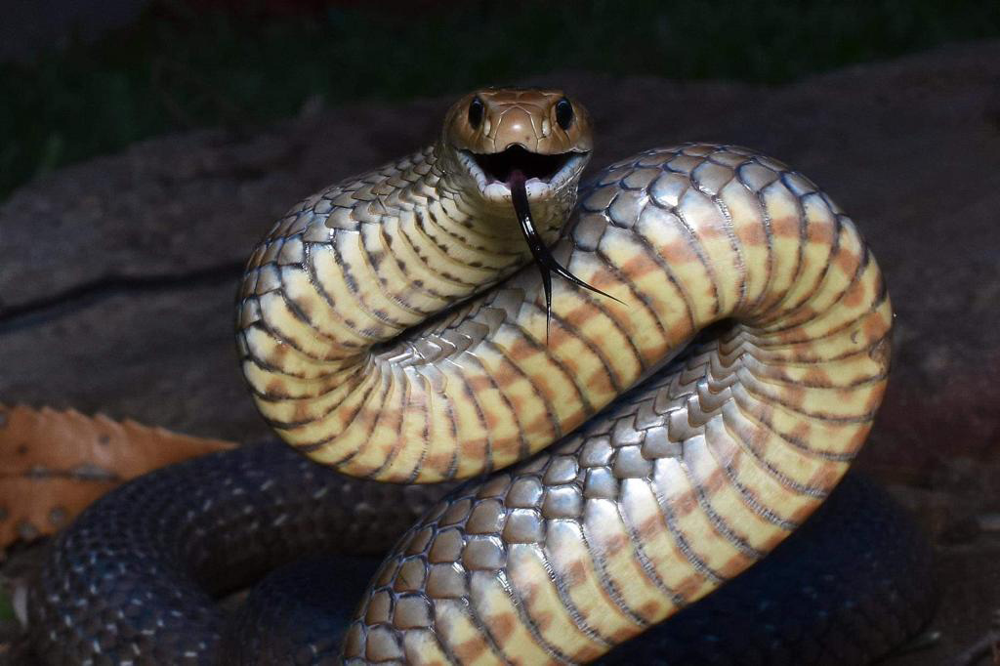

.jpg)
.jpg)
.jpg)
Eastern Brown Snake
ชื่อวิทยาศาสตร์: Pseudonaja textilis
ลักษณะทั่วไป
Eastern Brown Snake (Pseudonaja textilis) หรือ งูน้ำตาลตะวันออก เป็นหนึ่งในงูที่มีพิษร้ายแรงที่สุดในโลก โดยได้รับการจัดอันดับให้เป็นงูบนบกที่มีพิษร้ายแรงเป็นอันดับ 2 ของโลก รองจากงูไทปันโพ้นทะเล (Inland Taipan) มีลักษณะทางกายภาพ สัดส่วน และสีสันที่น่าสนใจและมีความหลากหลายทางพันธุกรรมสูงมาก ตัวเต็มวัยโดยทั่วไปมีความยาวเฉลี่ยอยู่ที่ 1.5 ถึง 1.8 เมตร ตัวผู้ที่มีขนาดใหญ่เป็นพิเศษในธรรมชาติอาจเจริญเติบโตได้ยาวเกิน 2.0 เมตร และมีบันทึกขนาดสูงสุดอยู่ที่ประมาณ 2.4 เมตร โครงสร้างลำตัวจัดอยู่ในกลุ่มงูที่มีความสมดุล คือ ไม่หนาเทอะทะแบบงูหลามหรืองูพิษในกลุ่ม Viper และไม่อ้อนแอ้นเกินไป เป็นโครงสร้างสายพันธุ์ที่เอื้อต่อการเลื้อยเคลื่อนที่ด้วยความเร็วสูงมากบนพื้นดิน ตัวผู้มักจะมีขนาดตัวเฉลี่ยใหญ่และยาวกว่าตัวเมียเล็กน้อย ซึ่งเป็นลักษณะที่พบได้บ่อยในงูพิษตระกูล Elapidae หัวมีขนาดเล็กและกลมกลืนเชื่อมต่อกับลำตัวโดยไม่มีคอที่คอดกิ่วชัดเจน (ไม่เหมือนหัวรูปสามเหลี่ยมของงูเขียวหางไหม้) มนเรียวคล้ายกระสุนปืน เพื่อช่วยในการมุดหรือแทรกตัวตามรอยแยกและโพรงดิน ดวงตามีขนาดค่อนข้างใหญ่เมื่อเทียบกับขนาดหัว ม่านตาเป็นวงกลมดำสนิท (Round Pupil) ล้อมรอบด้วยขอบสีส้มหรืออมเหลือง ทำให้มันมองเห็นการเคลื่อนไหวในเวลากลางวันได้ดียิ่ง เขี้ยวพิษ (Fangs) อยู่บริเวณด้านหน้าของขากรรไกรบน (Proteroglyphous) แต่มีขนาดค่อนข้างเล็ก ยาวเพียงประมาณ 2–4 มิลลิเมตร ซึ่งแม้จะเล็กกว่างูพิษชนิดอื่น แต่พิษที่เข้มข้นสูงมากทำให้เขี้ยวขนาดเล็กนี้ทรงพลังเกินพอในการสังหารเหยื่อ เกล็ดด้านหลังและข้างลำตัวเป็นแบบเรียบเนียนไร้รอยสัน (Smooth Scales) จัดเรียงอย่างเป็นระเบียบประมาณ 17 แถวบริเวณกลางลำตัว มีความเงางามสะท้อนแสงแดดได้ดี เกล็ดท้องเป็นแผ่นกว้างและแข็งแรง ช่วยในการยึดเกาะพื้นผิวขณะเลื้อยด้วยความเร็วสูง โทนสีหลักมีตั้งแต่ สีน้ำตาลสว่าง, สีน้ำตาลส้ม, สีกาแฟ, สีเทาอมน้ำตาล ไปจนถึงสีน้ำตาลเข้มเกือบดำสนิท สีของลำตัวมักเป็นสีเดียวกลมกลืนตลอดทั้งตัวในตัวเต็มวัย แต่อาจมีละอองจุดเข้มกระจายอยู่เล็กน้อย ใต้ลำตัวมีสีครีม, สีเหลืองอ่อน หรือสีขาวนวล จุดเด่นสำคัญคือมักมี จุดแต้มสีส้ม สีกาแฟ หรือสีชมพูอมเทา กระจายตัวเป็นดวงๆ อยู่บริเวณท้อง ซึ่งเป็นจุดสังเกตเฉพาะตัวที่สำคัญ ในงูวัยอ่อนมักมีลวดลายต่างจากตัวเต็มวัยอย่างสิ้นเชิง หัวอาจมีแถบสีดำแถบกว้าง และมีแถบปล้องสีดำรัดรอบลำตัวเป็นคาดๆ ตลอดตัว คล้ายงูมีพิษชนิดอื่น ซึ่งลวดลายคาดนี้จะค่อยๆ จางหายไปเมื่อเติบโตขึ้นจนกลายเป็นสีน้ำตาลเรียบในที่สุด
อาหารการกิน (Diet & Hunting Strategy)
- อาหารหลักในธรรมชาติ:
- สัตว์เลี้ยงลูกด้วยนมขนาดเล็ก: หนูนา, หนูบ้าน (House Mice) และกระต่ายวัยอ่อน ซึ่งเป็นเหยื่อหลักที่งูชนิดนี้ชื่นชอบมากที่สุด
- สัตว์เลื้อยคลาน: กิ้งก่า, สกิงก์ (Skink) และงูชนิดอื่นที่มีขนาดเล็กกว่า
- สัตว์อื่นๆ: นกขนาดเล็กและไข่นก รวมถึงสัตว์ครึ่งบกครึ่งน้ำ เช่น กบ ในบางโอกาส
- พฤติกรรมงูกินกันเอง (Cannibalism): มีบันทึกว่า Eastern Brown Snake ล่าและกินงูชนิดเดียวกันหรืองูสายพันธุ์อื่นเมื่อโอกาสอำนว
- กลยุทธ์การล่าเหยื่อ:
- ใช้สายตาที่แหลมคมและการดมกลิ่นผ่านลิ้นสองแฉกในการสะกดรอยตามเหยื่อในเวลากลางวัน
- การสังหารเหยื่อแบบผสมผสาน: เมื่อเข้าใกล้เหยื่อ งูจะฉกอย่างรวดเร็วเพื่อฉีดพิษเข้าสู่ร่างกายเหยื่อ หากเหยื่อมีขนาดใหญ่หรือดิ้นรน มันจะใช้ลำตัวเข้ารัดเหยื่อ (Constriction) ควบคู่กันไปด้วยเพื่อกดให้เหยื่ออยู่นิ่ง ชะลอการดิ้นรน และเปิดโอกาสให้พิษออกฤทธิ์ได้รวดเร็วที่สุด
Eastern Brown Snake เป็นสัตว์กินเนื้อที่ล่านกและสัตว์ขนาดเล็กเป็นอาหารหลัก โดยสายพันธุ์นี้มีอัตราการเผาผลาญพลังงานสูง ทำให้ต้องการอาหารอย่างสม่ำเสมอ
นิสัยและพฤติกรรม (Behavior & Temperament)
- เป็นงูที่ออกหากินใน เวลากลางวัน เป็นหลัก ตื่นตัวมากที่สุดในช่วงเช้าและบ่ายแก่ๆ โดยในวันที่มีอากาศร้อนจัด มันอาจปรับตัวมาออกหากินในช่วงค่ำหรือพลบค่ำแทน
- Eastern Brown Snake ไม่ใช่งูที่เชื่องช้า มันปราดเปรียวและเคลื่อนที่ได้รวดเร็วมากเมื่อเทียบกับงูพิษชนิดอื่น
- มีประสาทสัมผัสไวต่อการสั่นสะเทือนและการเคลื่อนไหว หากพบมนุษย์ในระยะไกล สัญชาตญาณแรกของมันคือ การเลื้อยหนีไปหลบซ่อน
- หากถูกยั่วยุ หรือไม่มีทางให้ถอยหนี งูจะยกส่วนหน้าของลำตัวขึ้นสูงจากพื้นเป็นรูปตัว S (S-shape curve)
- ขยายแผงคอออกเล็กน้อยเพื่อทำให้ตัวดูใหญ่ขึ้น พร้อมกับเปิดปากกว้างและส่งเสียงขู่
- ท่าทางรูปตัว S นี้เป็นสัญญาณเตือนขั้นสุดท้ายว่างูพร้อมที่จะฉกโจมตีในระยะไกลและรวดเร็วทันที
- แตกต่างจากงูป่าชนิดอื่น Eastern Brown Snake สามารถปรับตัวให้เข้ากับการขยายตัวของเมืองได้ดีมาก
- มักพบได้ตามฟาร์มเกษตรกรรม กองไม้ กองวัสดุก่อสร้าง หรือแม้แต่ในสวนหลังบ้านของมนุษย์ เนื่องจากแหล่งเหล่านี้เป็นศูนย์รวมของ หนู ซึ่งเป็นอาหารโปรดของมัน ทำให้เกิดการเผชิญหน้ากับมนุษย์และสัตว์เลี้ยงอยู่บ่อยครั้ง
ถิ่นอาศัย พิษ และความอันตราย
- ถิ่นอาศัย: Eastern Brown Snake มีเขตการกระจายพันธุ์ที่กว้างขวางครอบคลุมพื้นที่ส่วนใหญ่ทางฝั่งตะวันออกและตอนกลางของทวีปออสเตรเลีย รวมถึงบางส่วนของเกาะนิวคินี
- ฝั่งตะวันออกและตะวันออกเฉียงใต้:
- พบได้หนาแน่นตลอดแนวชายฝั่งและพื้นที่ตอนใน ตั้งแต่ภาคเหนือของรัฐควีนส์แลนด์ (Far North Queensland), รัฐนิวเซาท์เวลส์ (New South Wales), รัฐวิกตอเรีย (Victoria) ไปจนถึงคาบสมุทรยอร์ก (Yorke Peninsula) ในรัฐเซาท์ออสเตรเลีย (South Australia)
- พื้นที่เขตร้อนและตอนกลาง:
- มีประชากรกลุ่มย่อยกระจัดกระจายอยู่ในบริเวณ Barkly Tableland และ MacDonnell Ranges ในนอร์เทิร์นเทร์ริทอรี (Northern Territory) รวมไปถึงขอบตะวันออกของภูมิภาคคิมเบอร์ลีย์ (Kimberley) ในรัฐเวสเทิร์นออสเตรเลีย
- ข้อยกเว้น:
- ไม่พบ บนเกาะแทสเมเนีย (Tasmania) และพื้นที่ป่าดิบชื้นขนาดใหญ่
- พบประชากรแยกตัวอยู่ในภูมิภาคตอนใต้ เช่น บริเวณ Merauke ในจังหวัดปาปัวของอินโดนีเซีย รวมถึงจังหวัด Central และ Milne Bay ของประเทศปาปัวนิวกินี
- ประเภทพื้นที่เปิด (Open Habitats):
- ชอบอาศัยในพื้นที่เปิดโล่ง เช่น ทุ่งหญ้า (Grasslands), ป่าโปร่ง/ป่าละเมาะ (Open Woodlands & Savannas), พื้นที่พุ่มไม้แห้งแล้ง (Arid Scrublands) และพื้นที่ชายฝั่งทะเล (Coastal Heaths)
-
พื้นที่เกษตรกรรม:
- พบได้บ่อยตามฟาร์มเลี้ยงสัตว์ ทุ่งหญ้าเลี้ยงสัตว์
และไร่เพาะปลูก ซึ่งเป็นแหล่งที่มีความชื้นและมีแหล่งน้ำจากการทำเกษตร
-
ชานเมืองและชุมชน:
- มักปรากฏตัวตามสวนหลังบ้าน, ขอบเขตเมือง, กองไม้, กองสังกะสี และสิ่งปลูกสร้างชั่วคราว
ปัจจัยดึงดูด:
การขยายตัวของชุมชนและฟาร์มส่งผลให้ประชากร หนูบ้าน (House Mice)
และหนูนาเพิ่มจำนวนขึ้นอย่างมาก
ซึ่งหนูเป็นอาหารหลักของงูชนิดนี้
ทำให้ Eastern Brown Snake เพิ่มจำนวนและเข้ามาอาศัยใกล้ชิดกับมนุษย์มากขึ้น
จนกลายเป็นงูพิษที่พบเจอและเกิดอุบัติเหตุกัดคนได้บ่อยที่สุดในออสเตรเลีย
1. ประเทศออสเตรเลีย (Australia)
2. เกาะนิวคินี (New Guinea)
ถิ่นอาศัยในธรรมชาติ (Natural Habitats)
งูชนิดนี้เป็นงูบนบก (Terrestrial Snake) ที่มีความสามารถในการปรับตัวเข้ากับสภาพแวดล้อมได้ดีเยี่ยม สามารถอาศัยอยู่ได้ในสภาพภูมิประเทศที่หลากหลาย:
การอยู่อาศัยร่วมกับมนุษย์และเขตเมือง (Adaptation to Human Environments)
จุดเด่นสำคัญของการกระจายตัวของ Eastern Brown Snake คือการขยายพื้นที่เข้าสู่เขตเกษตรกรรมและเขตชุมชนเมือง (Agricultural & Semi-urban Areas):
พิษของ Eastern Brown Snake มีความรุนแรงระดับสูงมาก (ค่า LD50 อยู่ที่ประมาณ 0.053 mg/kg) ซึ่งจัดว่างูพิษบนบกที่ทรงพลังที่สุดเป็นอันดับ 2 ของโลก ปริมาณพิษเพียงเล็กน้อยจากการกัดแค่นัดเดียวก็สามารถคร่าชีวิตมนุษย์ได้อย่างรวดเร็วหากไม่ได้รับการรักษาทันท่วงที
1. องค์ประกอบและรูปแบบของพิษ (Venom Composition)
- Procoagulants (พิษต่อระบบเลือด - โดดเด่นที่สุด): มีเอนไซม์ประเภท Prothrombin Activators รุนแรงมาก เมื่อพิษเข้าสู่กระแสเลือด จะกระตุ้นให้เกิดการแข็งตัวของเลือดอย่างรวดเร็วทั่วร่างกาย ส่งผลให้สารช่วยการแข็งตัวของเลือด (Fibrinogen) ถูกใช้จนหมดสิ้นในเวลาไม่กี่นาที เกิดภาวะที่เรียกว่า VICC (Venom-Induced Consumption Coagulopathy) ทำให้เลือดของผู้ป่วยสูญเสียความสามารถในการแข็งตัวอย่างสิ้นเชิง และนำไปสู่ภาวะเลือดออกไม่หยุดทั้งภายในและภายนอกร่างกาย
- Neurotoxics (พิษต่อระบบประสาท): ประกอบด้วยทั้ง Pre-synaptic และ Post-synaptic Neurotoxins ยับยั้งการส่งสัญญาณระหว่างประสาทและกล้ามเนื้อ ส่งผลให้กล้ามเนื้ออ่อนแรง ปากเจ่อ หนังตาตก อัมพาต และระบบการหายใจล้มเหลว
- Nephrotoxins & Cardiotoxins (พิษต่อไตและหัวใจ): ในบางกรณี พิษอาจส่งผลให้เกิดภาวะไตวายฉุกเฉิน และอาจทำให้เกิดภาวะหัวใจล้มเหลวเฉียบพลัน (Early Collapse) ได้ภายในไม่กี่นาทีหลังถูกกัด
พิษของ Eastern Brown Snake เป็นสารผสมซับซ้อนที่เน้นทำลายระบบเลือดและระบบประสาทเป็นหลัก โดยมีเอนไซม์สำคัญ 2 กลุ่มใหญ่:
2. อาการหลังถูกกัด (Clinical Symptoms)
- อาการระยะแรก (ภายใน 15–60 นาทีแรก)
- การวูบหมดสติเฉียบพลัน (Early Collapse): ผู้ป่วยมักมีอาการหน้ามืด เวียนศีรษะอย่างรุนแรง ความดันโลหิตตก และหมดสติลงทันทีชั่วคราว (ทุเลาลงได้เองเมื่อนอนราบ) ซึ่งเป็นสัญญาณเตือนสำคัญของการได้รับพิษเข้าสู่กระแสเลือด
- ระบบทางเดินอาหาร: คลื่นไส้ อาเจียน ปวดท้อง และปวดศีรษะอย่างหนัก
เนื่องจากเขี้ยวของ Eastern Brown Snake มีขนาดเล็กมาก (ยาวเพียง 2–4 มม.) แผลถูกกัดจึงมัก ไม่มีรอยแผลใหญ่ ไม่เจ็บปวดมาก และไม่มีอาการบวมแดงที่รุนแรง ทำให้ผู้ป่วยหลายคนเข้าใจผิดว่าฉกไม่ติดหรือไม่ได้โดนกัดจริง
- เลือดออกผิดปกติ: เลือดไหลไม่หยุดจากแผลที่ถูกกัด, เลือดออกตามไรฟัน, รอยเขียวช้ำตามผิวหนัง หรือปัสสาวะมีเลือดปน
- หนังตาตก (Ptosis) มองภาพซ้อน พูดไม่ชัด กลืนลำบาก (สัญญาณประสาทถูกทำลาย)
- ภาวะสมองขาดเลือด/เลือดออกในสมอง: จากการที่เลือดไม่แข็งตัวร่วมกับความดันตก
- ภาวะหัวใจหยุดเต้น (Cardiac Arrest): จากการช็อกและการได้รับพิษอย่างรุนแรง
- ไตวายเฉียบพลัน (Acute Kidney Injury): พิษทำลายเซลล์ไตโดยตรงและเกิดจากสภาวะช็อก
Fun Fact
- เปลี่ยนลวดลายเปลี่ยนสีเมื่อโตขึ้น (Master of Disguise): งูวัยอ่อน (Juvenile) จะมีลวดลายคาดปล้องสีดำตัดขาวรอบตัว และมีแถบสีดำเข้มที่หัว คล้ายงูพิษชนิดอื่นอย่าง Coral Snake แต่เมื่อมันเติบโตขึ้น ลวดลายคาดเหล่านั้นจะ จางหายไปจนหมดสิ้น กลายเป็นสีน้ำตาลเรียบเนียนตลอดทั้งตัว
- เทคนิคการล่าแบบ 2 in 1 (Combo Attack): มันเป็นงูพิษไม่กี่ชนิดในโลกที่ใช้เทคนิคการล่าแบบผสมผสาน เมื่อฉีดพิษเข้าใส่เหยื่อที่มีขนาดใหญ่แล้ว หากเหยื่อยังดิ้นรน มันจะใช้ลำตัวเลื้อยเข้า รัดเหยื่อ (Constriction) ควบคู่ไปด้วยทันทีเพื่อไม่ให้เหยื่อหนีไปไหนขณะรอพิษออกฤทธิ์
- สายตาแหลมคมผิดปกติ: งูส่วนใหญ่ใช้การรับกลิ่นผ่านลิ้นเป็นหลักและสายตายาว/พร่ามัว แต่ Eastern Brown Snake มีดวงตากลมโตและมองเห็นการเคลื่อนไหวในเวลากลางวันได้ดีเยี่ยม มันสามารถมองเห็นและล็อกเป้ามนุษย์หรือเหยื่อได้จากระยะไกลหลายเมตร